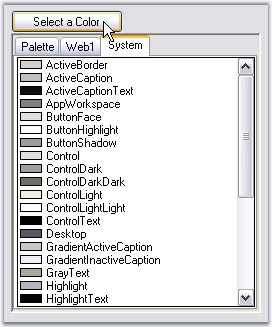
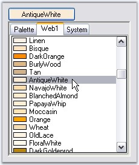

ColorPickerButton displays the ColorUIControl as its dropdown. ColorPickerButton has properties to customize the ColorUIControl. Refer the User Guide for ColorUIControl. The size for the dropdown, i.e, ColorUIControl can be set using ColorUISize property.
|
[C#]
this.colorPickerButton1.ColorUISize = new System.Drawing.Size(250, 280); |
|
[VB.NET]
Me.colorPickerButton1.ColorUISize = New System.Drawing.Size(250, 280) |

Figure 306: ColorUISize-Width = 250, Height = 280
ColorPicker Appearance
The appearance and behavior of the ColorPickerButton can be controlled using the below properties.
|
ColorPickerButton Properties |
Description |
|
SelectedAsBackColor |
Specifies whether ColorPickerButton.SelectedColor is set as the button backcolor. |
|
SelectedAsText |
Specifies whether ColorPickerButton.SelectedColor is set as the button text value. |
|
[C#]
this.colorPickerButton1.SelectedAsBackcolor = true; this.colorPickerButton1.SelectedAsText = true; |
|
[VB.NET]
Me.colorPickerButton1.SelectedAsBackcolor = True Me.colorPickerButton1.SelectedAsText = True |

Figure 307: AntiqueWhite Text and Background color for ColorPickerButton
See Also
Color Groups, Tab Text, ColorUIControl Appearance, Runtime Settings of ColorUIControl.